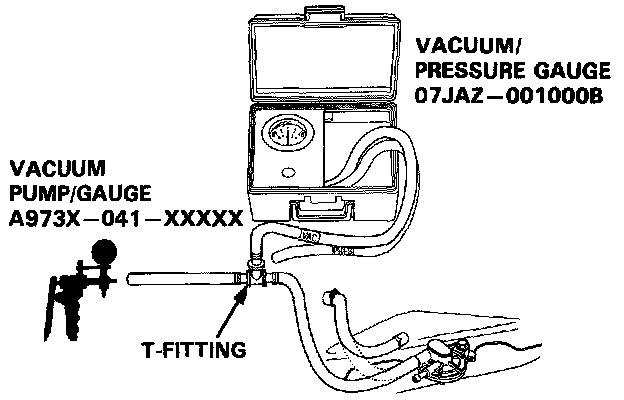
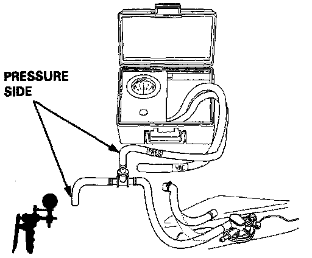

Two-Way Valve Testing
1. Remove the fuel fill cap.2. Remove vapor line from the two way valve on the fuel tank and connect to T-fitting from vacuum gauge and vacuum pump as shown.
EVAP Two-way Valve System Testing (1 Of 2):

3. Apply vacuum slowly and continuously while watching the gauge.
^ Vacuum should stabilize momentarily at 5-15 mm.Hg (0.2-0.6 in.Hg)
^ If vacuum stabilizes (valve opens) below 5 mm.Hg (0.2 in.Hg) or above 15 mm.Hg (0.6 in.Hg), install a new valve and retest.
4. Move vacuum pump hose from vacuum to pressure fitting, and move vacuum gauge hose from vacuum to pressure side as shown.
EVAP Two-way Valve System Testing (2 Of 2):

5. Slowly pressurize the valve watching the gauge.
^ Pressure should stabilize at 10-35 mm.Hg (0.4-1.4 in.Hg).
^ If pressure momentarily stabilizes (valve opens) at 10-35 mm.Hg (0.4-1.4 in.Hg), the valve is OK.
^ If pressure stabilizes below 10 mm.Hg (0.4 in.Hg) or above 35 mm.Hg (1.4 in.Hg), install a new valve and retest.